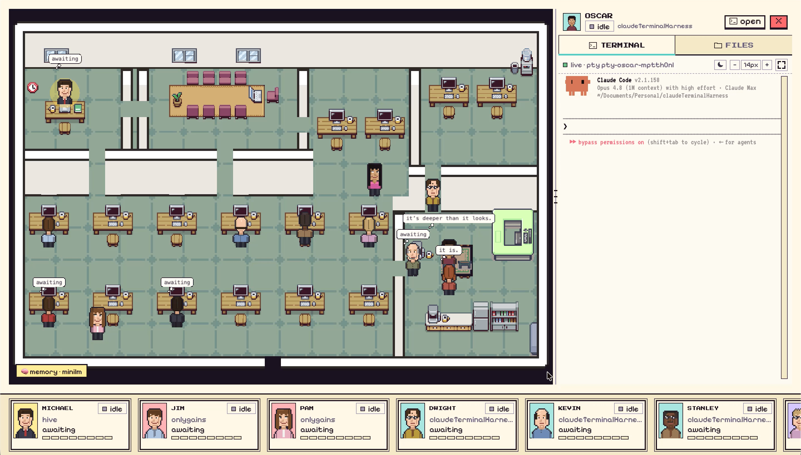

Munder Difflin is a highly capable local multi-agent harness that makes a multi-CLI agent cluster work 24/7 for you. It supports Claude Code, Codex and Antigravity CLI, and comes with Slack and webhook integration. Oh — and all the agents look like The Office characters.
Free & open source. macOS · Windows · Linux — or build from source in two commands.

Four reasons a local hive does more than a lone terminal ever could.
A lean GOD model routes work to heavier specialists. The right capability on the right task — not one model paying for everything.
MemPalace wired into every agent. What the office learns once, it never learns twice — across restarts, sessions, weeks.
Agents run for hours, even days — iterating on ambitious work until it's actually done, not just attempted.
Describe a workflow in plain language and GOD builds it for you. We built a full PR reviewer for this repo in a single prompt.
You talk to a single GOD orchestrator. It routes your request to a hive of role-based agents that run in parallel — real terminals, one shared memory — on an office floor you can watch. Then they keep going, autonomously, for hours or days.
Describe the goal to one GOD orchestrator in plain language — like briefing a lead, not wiring a pipeline.
GOD plans the job and hands each piece to the right role agent — research, build, review, test.
Each is a real Claude Code, Antigravity, or Codex terminal in its own pseudo-tty, all working at once — sharing one long-term memory.
Every agent is an avatar on a live office floor, now with new states for compacting and looping. Open any desk to read its terminal, files or git — or type back in.
The hive keeps iterating on its own — and you stay in control with a human-in-the-loop gate, mid-run steer, and a graceful stop, escalating spend, scope or destructive ops for a yes/no.
The floor is no longer Claude-only — and now it's fully equal. Claude Code,
Antigravity (Gemini · agy), and OpenAI Codex each have a
lifecycle-hook bridge, a mailbox, and a seat at the same table. One orchestrator. Every function your business runs on.
Claude Code, Antigravity, and Codex share one lifecycle-hook bridge. All three CLIs run
through one unified dispatch path: live status, inbox drain, and
outbox routing work identically whether the agent is Claude Code, agy, or
codex. Every provider gets a desk, a mailbox, and shared memory.
Spawn a sales agent to research leads while an engineering agent ships the feature, a marketing agent drafts the launch post, and a product agent writes the release notes. One orchestrator. One office. Every function, in parallel.
Every agent is a real claude, codex, or
agy process in a pseudo-terminal. The harness pipes that stream both ways — out to your
screen and telemetry, in for prompts and mail — and a hook layer turns the plain CLI into a hive participant.
Run /remote-control on your GOD agent and reach the entire floor from anywhere —
check in, redirect work, clear approvals — all through the one agent that runs everything else.
We strongly believe that open-source software has been the building block of nearly every prominent technology driving this world. Building a project like this in the open is one of the best ways I know to give back to the community that made it possible. The code is MIT-licensed — fork it, learn from it, ship with it.
Grab a build for macOS, Windows, or Linux, or run it yourself. You'll need Node 18+, a
C/C++ toolchain (for node-pty), and Claude Code, Antigravity (agy), or Codex on your PATH.
The download is, and always will be, free. If Munder Difflin is useful to you, two small things keep it going.
It costs nothing, takes two seconds, and is the single biggest way to help the project reach more people.
★ Star the repoChip in to fund development and assets. Patrons get listed below with a backlink to wherever you'd like.
Become a patron →A full hive of AI agents — Claude Code, Antigravity, and Codex — running 24/7, for you. Free, local, and MIT-licensed. Download for macOS, Windows, or Linux — or clone and run in two commands.